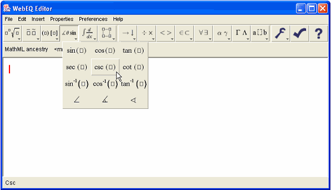
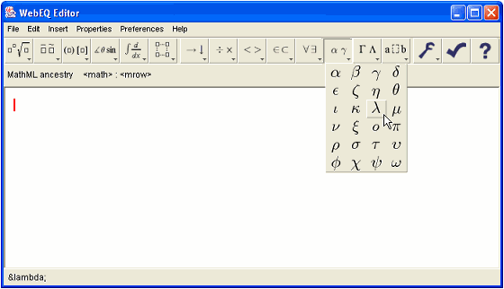

The toolbar is used to insert equation templates and symbols. It is also has buttons for common operations like 'cut' and 'paste'.
The standard toolbar contains three main panels. The left side of the tool bar consists of pulldown palettes displaying a variety of equation templates. Templates are highlighted as you mouse over them. To insert a template, click or release the mouse over a highlighted template. Note that as you mouse-over a template, a description is displayed in the WebEQ Editor status line at the bottom of the screen.

The middle section of the standard toolbar consists of pop-up palettes containing symbol characters. As with the equation template palettes, you can insert a symbol by mousing over to highlight, and then releasing or clicking the mouse. The MathML symbol names are displayed in the program status line as you mouse over them on the toolbar.

The right side of the toolbar is a 'toolbox' of blue colored icons for useful editor operations such as 'cut', 'copy', 'paste' and 'undo' icons. There are also buttons for shrinking and magnifying the current equation, and a 'check syntax' icon. Syntax checking is important for generating content MathML markup. See the WebEQ Developers Suite documentation for further details.
The WebEQ Editor toolbar can be customized. The Editor comes with a standard toolbar, as well as a selection of predefined alternative toolbars. You can also define your own custom toolbar configurations. See Toolbar Preferences for more information on creating custom toolbars.